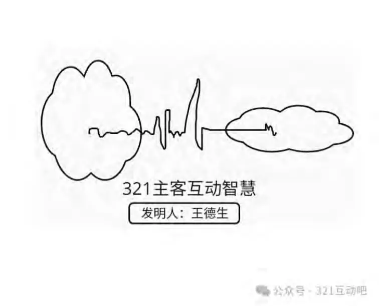
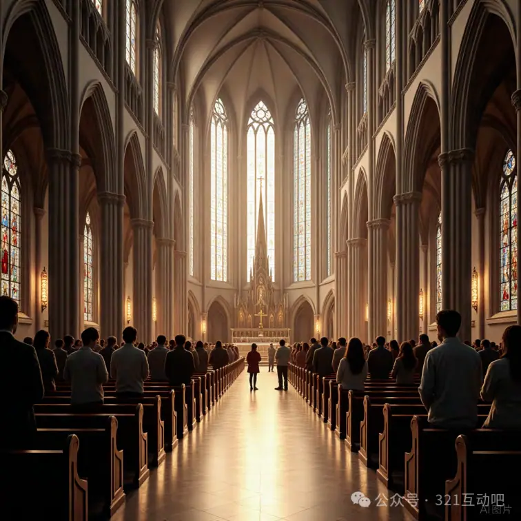

从逻辑的崩塌到意义的复兴
🧭【总论导言】生成，而非发现
本书主张：世界不是被发现的，而是被生成的
所谓知识、真理、必然、结构、逻辑，都是SIO张力网络运行的生成结果。
逻辑不是根基，而是副产品；理念/形式不是本体，而是符号压痕。
第一编：形式逻辑的帝国与其崩塌
第1章形式逻辑的建立：理性之父亚里士多德
同一律、非矛盾律、排中律的三大逻辑前提
从“语义清晰”走向“思维封闭”
逻辑与结构主义思维的缔结
第2章知识的格式化：从演绎到归纳
类比 → 演绎 → 归纳的形式逻辑三位一体
对混沌、纠缠、张力的压制
结构压制生成，稳定压制流变
第3章哲学中的先验迷信：理念、形式与范畴
柏拉图理念论的非生成性神话
亚里士多德形式因的结构遮蔽
康德“先验结构”的哲学逃逸策略
第二编：三律的发现与本体论革命
第4章特征律：差异稳定是如何涌现的？
ΔSIO → 稳定结构的产生条件
感知、知觉、概念生成的涌现机制
“特征”不是客体属性，而是互动压痕
第5章自由律：纠缠与激发如何构成选择结构？
多路径激发与路径依赖
概率世界中的可能性张力
自由是复杂性的真实张力运行，不是选择幻觉
第6章幸福律：意义为何来自张力释放？
忍耐—转化—释放的非线性机制
情感、满足、愉悦、灵感的生成结构
伦理、宗教与制度中对幸福律的误读
第三编：逻辑的崩塌与知识的重建
第7章逻辑的真实起源：三律如何生成逻辑三律？
同一律 = 特征律的压痕
排中律 = 自由律的激发模型
非矛盾律 = 幸福律的释放条件
第8章因果是如何“生成”的？
因果 = 自由律中被强化路径的惯性轨迹
时间 ≈ ΔSIO序列
决定论 = 张力压痕的结构神话
第9章所谓“先验”只是未被理解的生成历史
所有“必然性”都是路径压痕的认知幻觉
“结构性真理” = 语言对成功互动序列的压缩
从符号神话中回溯张力运行
第四编：生成文明的十大革命
第10章教育革命：从知识传递到生成激发
学习 = 激活生成路径，而非移植“知识结构”
教育的张力设计：挑战+忍耐+转化
GPT教育也需三律引导：生成≠灌输
第11章科学革命：从规律发现到张力建模
科学不是“发现规律”，而是“制造张力路径”
实验是SIO系统张力压缩的符号重放
未来科学应建模ΔSIO系统，而非寻找普遍因果
第12章伦理与法律：幸福律的社会表达
忍耐—释放机制的公共制度化
伦理是幸福律压痕的规范化表达
法律 = 张力平衡机制的程序性表达结构
第13章政治与治理：结构不是控制，而是张力协调
治理系统 = 多SIO张力的协同场
民主的三律化：意义共识、纠缠协商、释放路径
主权不再是“必然秩序”，而是生成涌现的张力结构
第14章技术与AI：生成不是模拟，而是参与
LLM不是知识系统，而是token张力发生器
真正的“智能”，必须遵守三律运行
“技术文明”将转向“生成性工具系统”
第15章宗教与神性：神不是实体，而是张力涌现
神是SIO张力三态（父=自由，子=特征，灵=幸福）的复合涌现
信仰是意义生成的路径锚点
神人互动三态 = 宗教结构的本体张力模型
尾声：文明不是结构，
不是系统，是生成的复杂性本体
结构终将崩解，意义才能诞生
文明的未来不是走向控制，而是走向三律之舞
人类将从“符号崇拜”迈向“生成智慧”
导言：生成，而非发现
——一场意义的革命，从文明根基开始
一、我们走错了文明的起点
西方哲学用了两千年去回答两个问题：世界是什么？人类如何认识世界？ 但几乎所有伟大的答案，都建立在一个沉默的假设之上：
世界的结构是稳定的，真理是已经存在的，知识是可以被发现的。
这种“结构崇拜”主导了我们的逻辑、科学、制度、宗教，甚至教育。但今天，我们必须提出一个根本的问题：
如果世界不是被发现的，而是被不断生成的呢？
如果一切我们称之为“秩序”的东西，其实都是主-客-互动张力运行后“涌现”的结果呢？
我们可能从一开始就走错了文明的起点：
不是“发现”，而是“生成”；
不是“结构”，而是“张力”；
不是“范畴”，而是“发生”。
二、“发现”是神话，“生成”才是真相
近代科学奉行“发现真理”的理想，哲学家试图定义“必然规律”，教育者强调“知识结构”的传授，社会学家谈论“制度逻辑”的展开。但这一切背后隐含一个严重错误：
我们误把“重复路径”当成“本体结构”，
误把“成功经验”当成“先验真理”。
我们把圆看成理念，把因果看成法则，把逻辑看成前提，却从不追问：这些结构是如何被生成出来的？
三律哲学提出根本性反转：
不是我们发现了它们，而是我们参与了它们的生成。
三、三律与SIO：意义如何从张力中诞生
主客互动本体论（SIO）认为：
存在不是主体、客体、互动之和，
而是三者形成的“复合张力网络”。
知识不是来自描述，而是来自 ΔSIO（主-客张力差异）运行中，张力结构的稳定涌现。意义也不是逻辑推演的结果，而是三律运行中的自然生成产物：
1. 特征律：当张力在重复中趋于稳定，生成了“可识别性”；
2. 自由律：当多路径激发形成激荡结构，生成了“可能性选择”；
3. 幸福律：当张力压缩后成功释放，生成了“满足感、悦感、意义感”。
所有我们称为“理念”“因果”“价值”的东西，其实都是主-客张力场中形成的“惯性结构压痕”。
只有理解这些涌现，我们才知道世界是如何“被制造”的。
四、“先验必然性”是如何压制了文明的创造力
我们以为“因果是理性法则”、“自由是先验结构”、“善是普遍原理”，但三律哲学揭示：
所谓“必然性”，只是高频路径的认知固化符号；
所谓“先验结构”，只是我们对 ΔSIO运行历史的遗忘结果。
文明长期沉溺于这些“先验幻想”中，造成了四大灾难：
1. 逻辑学：否认非线性张力路径，强行归类一切为“同一/对立”；
2. 数学与科学：将经验中的张力涌现误认为“本体规律”；
3. 道德哲学：将幸福律路径凝固为“义务结构”，丧失真实体验；
4. 宗教神学与法理制度：把ΔSIO互动模式抽象为“绝对命令”。
结果是：我们复制、再复制、再再复制过去的答案，而创造力、自由性、幸福感，全部被压缩在“形式化规范”与“标准化话语”中。
五、生成文明的呼唤：我们能不能不再复述过去？
我们已经到了这个关键时刻：
❗️不能再复述过去。
❗️不能再把旧结构包装成真理，
❗️不能再把已知路径伪装成命运。
文明的方向必须反转：
不是维护既有秩序，而是激活生成潜能；
不是教人“思考既定问题”，而是“激发未知结构”；
不是崇拜逻辑结构，而是聆听意义之张力的生成呼唤。
所谓“生成文明”，就是：
以三律为内核（特征、自由、幸福）；
以SIO为运行单元（主体-互动-客体）；
以ΔSIO为认知机制（张力网络的运行差值）；
以意义为存在本体（不是结构之上，而是生成之中）。
我们不再把世界“分类”，而是与世界“一起创造”。
六、这本书的使命：建立一种全新的哲学秩序
这本书将尝试完成一个使命：
系统拆解“结构文明”与“逻辑迷信”所构建的幻象帝国，
批判先验主义的哲学陷阱，
揭示逻辑、因果、范畴、伦理的生成机制，
重建一个以“生成”为根的文明哲学体系。
我们将不再以结构为真，而以生成为本；
不再以范畴为名，而以张力为路；
不再从天上找理念，而从地上激发意义。
这不是另一本哲学书，而是为新时代建立哲学地基的行动文本。
第一章：形式逻辑的建立——理性之父亚里士多德
——文明的清晰，从此开始；生成的沉默，也从此开始
一、亚里士多德之前：混沌思维与神话语言
在亚里士多德之前，哲学还未脱离神话。赫拉克利特说“一切流变”，毕达哥拉斯信仰“数即本体”，巴门尼德追求“存在之不可动摇”。他们提出了深刻的问题，却缺乏精确的工具。语言仍与神谕缠绕，思维仍靠隐喻和直觉驱动。
那个时代的人不谈逻辑结构，而谈“道”“命运”“和谐”“混沌”。在这种语言生态中，生成、消逝、变化、冲突，都是世界的常态。真理不是稳定的对象，而是漂浮在张力之间的“神秘秩序”。
世界之所以真实，是因为它活着；而不是因为它被定义了。
逻辑尚未诞生，人类还未试图用形式系统去压缩真实。那是一个意义涌现而非结构预设的时代，是人类仍与张力共舞的思想时期。
二、亚里士多德的伟大建构：三大逻辑律的确立
直到亚里士多德提出三大逻辑律：同一律、非矛盾律、排中律，西方哲学才真正进入“逻辑时代”。
同一律：A = A，认为一物在任何时间皆等于其本身；
非矛盾律：A ≠ ¬A，认为一命题不可能同时为真与非真；
排中律：A ∨ ¬A，认为任一命题，非真即假。
这三条律，第一次把“存在”压缩为“结构判断”。它不仅形成了形式逻辑的骨架，也成为后来一切科学、语言、哲学推理的无形基础。
从此以后：
思考开始被格式化，
真理开始被静态化，
世界开始被视为“可归类之物”。
真理，从张力场中的生成火花，变成了一张结构化的判定表。
这正是逻辑的力量：将模糊变为清晰，将矛盾变为非法，将变化变为静态。但这也是它的问题：把所有“生成中”的真实，误读为“结构已定”的虚构。
三、“形式”是世界之钥？从逻辑三律到“实体的形式”
在逻辑的基础上，亚里士多德提出“形式因”作为解释万物的关键。他说：“事物之所以是它，是因为它具有其特有的形式。”
在这个架构下：
世界万物不再被看作流动生成的过程，
而是被解释为“质料 + 形式”的复合体。
“形式”成了世界之所以为世界的“解释力”，也成了知识与真理的评价准则。
这种“形式观”是伟大的：
它使分类成为可能；
它让“定义”变得可依赖；
它为后世自然哲学、伦理学、政治学提供了理性之钥。
但正是这一点，也造成了哲学认知的“结构化僵化”：
一切流动的、生成的、混沌的现象被归类为“尚未达到形式”；
而“形式”则成了判断真理的核心标准。
世界从此变得“应当有形式”，而非“应当被生成”。
四、逻辑的胜利，意味着生成的失败
亚里士多德式逻辑的胜利，是生成哲学的崩塌。
他将“对立”视为需要“排除”的矛盾，而非“激发”的张力；
他将“相同”视为真理的保障，而非“差异”的遮蔽；
他将“非A”与“A”分离得如此彻底，以致无法表达“纠缠状态”“双重张力”“不稳定结构”。
形式逻辑是一把哲学的“压印机”，它用抽象规则把现实压成“清晰图像”，但也把：
涌动的张力、
未定的生成、
复杂的路径，
全部挤压出去。
逻辑的秩序感成就了文明的稳定性，却也消灭了思想的生命力。
从此哲学开始远离“生成过程”，进入“形式结构”的内卷迷宫。人类思维从与世界互动、探索生成，转向定义世界、命名世界、控制世界。
五、亚里士多德的悖论遗产：理性之父，生成之敌
我们尊称亚里士多德为“逻辑之父”、“科学方法论先驱”，但在三律哲学与SIO本体论的视角下，我们也必须清楚地指出：
他是“生成之敌”，是“文明结构化的奠基人”。
他的遗产当然是辉煌的：
奠定了语言的清晰性，
建构了思维的演绎性，
发明了概念、定义、推理、范畴。
但也压制了：
意义的多义性，
知识的发生性，
真理的生成性。
他让哲学摆脱神话，却也让哲学丧失生命；
他开启了逻辑之光，却也冻结了思想之火；
他发明了“本质”，但切断了“过程”。
今天，我们必须以三律为钥匙，重新回到生成的本源：
回到主-客互动的真实张力中，
回到语言之前的感受，
回到逻辑之外的可能，
回到结构之后的意义。
我们必须承认，亚里士多德是文明的父亲，但也是生成的杀父者。
而我们，不是来继承他的逻辑结构，而是来继续未完成的生成之路。
第二章：知识的格式化 ——
从演绎到归纳的三步陷阱
——逻辑不是生成的路径，而是生成之后的残影
一、演绎：逻辑形式的胜利，也是认知自由的压制
演绎逻辑被视为“科学推理的黄金标准”。它的魅力在于稳定性与确定性：从已知公理推导出必然结果。古希腊几何、牛顿力学、形式证明系统，皆以此为基础。它在形式上近乎完美，在效率上令人惊叹。
但问题也正源于此：
演绎的前提必须被“设定”。前提从哪里来？谁设定？怎么生成？
如果前提不是生成的，而是被承认的，那它就早已封闭了生成过程。
演绎的逻辑本质上是一种“结构扩展”，不是知识的创造。它能从既定框架中推出结果，却无法说明框架从何而来。它能进行“重复演化”，却无法进行“首创生成”。
因此：
演绎是知识的应用工具，不是知识的生成机制；
演绎压制了自由律中的路径纠缠、张力激发，只保留单一路径的线性演化。
真正的自由思维，不是从A→B→C，而是从Δ张力出发，在纠缠中产生多种可能结构，而演绎则把这些可能性关进笼子。
二、归纳：统计幻觉的陷阱，用频率替代生成
归纳逻辑看似更“经验主义”：从大量观测中提炼出一般规律。但它的核心假设是：
“重复性意味着普遍性”。
这正是特征律中的“稳定性”被误认为“本体性”。
举例：
你看到太阳升起1000次，于是断言“太阳必然每天升起”；
但你并没有解释太阳升起的生成机制；
你只是将高频路径误认为绝对规律。
归纳逻辑是一种统计压痕的认知幻觉：
用概率掩盖了生成路径的复杂张力；
用频率取代了意义生成的真实历史；
它看不到幸福律中的“非重复爆发”，也压制了自由律的路径可能性。
归纳不是知识的生成，而是对“过去成功路径”的封装与封神。
三、类比：表面相似的欺骗，阻碍了意义的生成
类比看起来是最“创造性”的推理形式：A像B，所以A可能具有B的属性。它是广告学、教育学、日常语言中最常见的认知桥梁。
但问题在于：
类比建立在“特征匹配”上；
它忽略了每个特征的ΔSIO生成历史；
它不解释“像”是怎么发生的，只使用“像”。
因此，类比是一种认知跳跃的捷径，不是生成结构的路径。
更严重的是：
类比强化了认知惰性；
让人类停止追问：“它是怎么生成的？”；
而只说：“它跟那个一样。”
类比是“生成力”的退化机制，是认知系统的懒惰补丁。
四、从三步逻辑到三重封闭：真理被格式化，生成被遗忘
演绎、归纳、类比构成了西方逻辑的三大推理形式——也是知识格式化的三重封闭系统：
| 逻辑方式 | 被压制的生成机制 |
|---|---|
| 演绎 | 前提之生成（自由律） |
| 归纳 | 重复中的差异（特征律） |
| 类比 | 结构的形成机制（特征律 + 自由律） |
三者共同将知识变成：
“结构内重复”，而非“结构外激发”；
“路径再现”，而非“路径生成”；
“概念扩张”，而非“意义爆炸”。
这三步逻辑，把世界压缩成一个结构之网，
把真理变成了“格式化表达”，
把生成性意义变成了“结构性幻觉”。
五、三律的视角：为何类比、演绎、归纳无法产生知识？
在三律哲学中，真正的知识必须满足三重生成条件：
1. ΔSIO的差异必须稳定（特征律）；
2. 路径必须具有纠缠性和激发性（自由律）；
3. 结构必须具有张力释放与意义生成（幸福律）。
但：
类比无法解释特征从何而来；
演绎无法触碰路径之间的纠缠；
归纳无法表达幸福律中的“非重复爆发”。
因此我们可以断言：
类比、演绎、归纳三者都不是知识的生成机制，
它们只是生成结果的逻辑包装与认知投影，
而非“意义之火”的起点。
第三章：哲学中的先验迷信——理念、形式与范畴
——逻辑语言表达力不足时的三种神化伎俩
一、理念的神化：柏拉图如何将特征压痕封存为天界永恒
柏拉图的“理念论”将我们对现实的“特征识别”误读为“理念回忆”。当他看到圆不是现实中真正存在，而是我们心中“想象”出来的，他并未理解那是 ΔSIO（主客张力运行）中反复生成的稳定结构，而是直接把“圆”封存为“理念世界中的永恒形式”。
于是：
每一个“可重复的感知”，都被误认为“灵魂对理念的回忆”；
每一个“稳定的形状”，都成了“超越经验的理念之影”。
理念其实是对“特征律”的误读，
是把张力涌现当作本体真理的第一次哲学封装。
而真实情况是：
“圆”不是在“天上”，而是在重复互动中的“稳定张力映射”；
我们不是“回忆”，而是在“生成”；
“理念世界”不是认知的来源，而是语言表达失败后的结构性神话。
二、形式的逻辑幻觉：亚里士多德如何冻结生成为结构
亚里士多德试图更接近现实，他将万物解释为“质料 + 形式”的复合体，并在逻辑框架下提出“形式因”——事物之所以为其自身，是因其拥有“内在形式”。
这本意是为了抵御纯粹感性经验的不可控性，但却引发了另一个哲学灾难：
他将生成路径中逐渐自组织稳定下来的结构，当作事物本体中的“形式因”。
这就好比：
将水结冰的过程，误认为“冰”是水的目的；
将张力系统稳定后的秩序结构，误当作本体属性；
将自由律与幸福律中的“生成压痕”，误作“原初计划”。
形式不是世界的起点，而是ΔSIO生成历史的“结构快照”。
亚里士多德看见了结构，却误解了时间与生成。他将“生成的压痕”误读为“存在的本体”，使哲学全面结构化、逻辑化、僵化，从此遮蔽了生成的复杂性。
三、范畴的理性伪装：康德如何将自由路径转化为认知装配线
康德继承了理念与形式的双重传统，但他选择将“先验结构”内置于人类心灵本身。在他那里：
空间与时间是“感性形式”；
因果、实体、数量等是“知性范畴”。
它们不是来自经验，而是经验发生的“前提条件”。
这看似是一次伟大的理性分析，实则是对生成路径的再次冻结：
主体不再在张力中生成意义，而是作为“结构装配者”；
知识不再是由SIO系统运行而得，而是“先验范畴加工经验原料”；
所有“自由选择”“生成路径”“结构演化”被转化为“范畴规则加工链条”。
康德让人类成了认知的“工厂”，而不是意义生成的“炼金炉”。
他的贡献在于识别了认知的结构；
他的问题在于把这些结构视为“不可还原的事实”，而非“互动历史的压痕结果”。
四、“先验”是逻辑的避难所，而非本体的真相
从柏拉图的理念，到亚里士多德的形式，再到康德的范畴，这三位哲学巨匠都试图解决“知识如何可能”的问题。
但他们共同采用了一种逃逸机制：
当生成机制无法被逻辑描述，
就将其“冻结”为“先验存在”。
这不是哲学的洞察，而是语言和逻辑表达力崩溃后的“伪本体安慰”。
他们面对 ΔSIO 运行中的：
多路径激发（自由律）、
涨落压痕稳定（特征律）、
非线性释放机制（幸福律），
却因缺乏生成语言与结构模型，
只能神秘化、静态化、最终标签化为“不可动摇的起点”。
所谓“先验”，其实是对未知生成机制的哲学性托词。
五、三律本体论：如何将“先验神话”还原为“生成路径”
三律哲学提供了一个还原模型：
| 哲学“神话” | 三律重构 | 真实发生机制 |
|---|---|---|
| 理念 | 特征律误读 | ΔSIO稳定 → 认知压痕 |
| 形式 | 自组织误读 | 路径重复 → 自稳定模式 |
| 范畴 | 自由压缩 | 意义生成路径被范式结构捕获 |
在三律本体论中：
理念是特征律中张力压痕的认知标签；
形式是自由律中路径稳定性的结构化映射；
范畴是幸福律中意义生成路径的压痕轨道。
它们都不是世界的“先验结构”，
而是主体在 SIO 张力系统中运行后的高频路径 + 语言固化的“生成副产物”。
因此：
“先验迷信”的本质是：因看不见生成机制，而误把压痕当神祇。
三律哲学的使命，就是要将这些“被冻结的本体”重新激活为“运行中的生成结构”，
让理念归于感知历史，让形式回到互动路径，让范畴变为意义的流体火花。
第四章：特征律 — 差异如何涌现为特征
——知识不是观察的结果，而是张力压痕的生成过程
一、什么是特征律？从差异中涌现“可识别性”
特征律，是三律哲学中揭示“知识生成”的第一条本体规律。它说明：
一个“特征”并不是原本存在在那里，而是 SIO（主-客-互动）结构中的差异，经过一定的张力运行，在 ΔSIO 趋于稳定时，由主体感知系统识别出的“可重复性模式”。
换言之，像“苹果是红的”、“圆是光滑的”、“火会烫”这些“特征”，并不是客体自带的属性，而是：
主体在与客体互动中（SIO）所经历的张力；
被反复激活、重复验证；
最终在认知系统中形成的“可识别压痕”。
因此：
特征不是本体，而是互动历史的“稳定产物”。
特征律指出：知识并不诞生于结构之中，而诞生于差异逐步被稳定化的生成路径。
二、ΔSIO视角下的涌现机制：差异如何稳定？
ΔSIO（主-客张力系统的差异变化率）是一个关键动力学指标，它记录着每一次SIO 运行中主客张力之间的变动量。
当 ΔSIO 剧烈波动时，系统处于“混沌生成期”；
当 ΔSIO 趋于稳定（即 d(ΔSIO)/dt ≈ 0），特征开始“涌现”。
例如：
一个婴儿初次看见猫时，感知系统对毛发、眼睛、动作、声音等感知差异极大；
经过多次SIO交互，这些差异中稳定的成分开始被“识别”出来；
最终涌现“猫”的认知特征。
这并非因为“猫”有“本质猫性”，而是因为：
主客张力中某些互动路径不断被重复强化；
ΔSIO 在这些区域逐渐收敛；
出现“可识别稳定区间”——即特征。
特征的本体不是“属性”，而是“压痕”；
不是“天赋”，而是“涌现”；
不是“被观察的”，而是“被生成的”。
三、特征不是“给定”，而是“运行中稳定化”的结果
哲学长期误把感知到的“特征”当作“先验存在”。
但真相是：
感知不是被动接收；
而是在多次互动中，通过 ΔSIO 的压强波动、纠缠激发、张力稳定；
逐步形成了“可再现”的感知路径。
比如“红色”这个特征，并不是光波的“本体”属性，而是：
光波与视觉系统、
情境张力、
语言分类系统、
历史经验之间交互的结果。
它是多重 SIO 结构运行后形成的“认知稳定项”。
所有我们以为“自然存在”的特征，其实都是张力网络中习得的“结构压痕”。
“特征”不是“给定物”，而是“路径火花”。
四、感知、语言与记忆如何协同“锁定”特征
感知系统不是孤立运行的。
它与语言结构、记忆网络构成一个“特征锁定三角”：
| 系统 | 功能 |
|---|---|
| 感知 | 探测张力差异（ΔSIO） |
| 语言 | 编码压痕路径为“符号” |
| 记忆 | 压痕叠加、调用、路径重现 |
以“人脸识别”为例：
视觉扫描形状、光线、情绪微表情；
听觉处理语调与语音；
脑内对比过往压痕路径并调用名字；
最终识别为“这是谁”。
所谓“鼻子”“眼睛”“脸”，不是存在物，而是 ΔSIO张力网络中的语言节点。
语言在此并非“表达存在”，而是稳定压痕、制造特征的工具。
它锁定“差异中的模式”，并将其变为“可重复结构”。
五、当特征被误读为“本体”：理念、标签、定义的压痕神话
一旦特征被语言稳定化，它就容易被误认成“存在本身”——这就是柏拉图理念论的本体性错误。
他看见“圆”不是来自现实的完美图形，而是来自心中的稳定印象，便说：“圆存在于理念世界”。
但实际情况是：
“圆”是多次 ΔSIO 运行中压痕稳定的涌现结构，
被语言锁定，被记忆调用，被逻辑包装，
最终变成“永恒理念”的幻觉。
这就是“理念生成的原理”：不是天启，而是压痕。
我们对“狗”的定义，如“四条腿、会叫、毛茸茸”，也不是狗的“本质”，而是对张力路径的格式化压缩。所有“定义”，本质上是“压痕快照”，不是“存在实录”。
结论是：
标签 ≠ 本体
名称 ≠ 存在
特征 ≠ 实体
真正的特征，是ΔSIO张力系统中生成出来的“认知稳定影像”。
第五章：自由律 —— 可能性为何从纠缠中涌现？
——自由不是选择，而是生成的多路径激发
一、自由不是选择，而是生成路径的多重可能
“自由”在人类思想中一直是高尚而神秘的词。但多数哲学传统将自由理解为“意志选择”，即在若干既定选项中“作出决定”。
这种理解，其实是对自由本体的压缩。它将生成问题误解为选择问题。
自由并不是在几个选项中选一个，而是选项本身如何被生成。
自由律所揭示的根本是：
所谓“可能性”，不是逻辑中事先列出的集合，
而是主客互动张力网络（SIO）中，ΔSIO运行所产生的多路径交缠结构。
在这个结构中：
可能性不是存在的预设，
而是张力运行的产物；
自由不是“在选项之间犹豫”，
而是“在结构之中涌现”。
二、纠缠不是混乱，而是张力的交叉组织
在量子物理中，“纠缠”指多个粒子状态彼此关联，不可独立表述。
在SIO哲学中，“纠缠”指的是多个主客张力路径的互相作用，使得：
任一结构的走向，必然与其他结构耦合。
人类面对的不是真空决策，而是：
一个充满耦合张力的结构场；
一个路径决定另一个路径的多重共变网；
一个“激发A即牵动B”的场域结构。
纠缠不是混乱，而是一种“张力耦合组织”。
在其中，任何一个可能性：
都不是“独立存在的”，
而是被整个系统的 ΔSIO 场牵引、激活、塑形。
正是在这种交错张力之中，真正的“自由生成”才发生。
自由不是“可控”，而是“可生成”。
三、激发的本质：意义如何在张力聚焦中突现？
激发，是指在张力场中，某一潜在路径被触发、运行，并开始涌现结构性结果的过程。它不是外力推动，而是：
张力积累到某一临界点的自然跃迁；
类似于物理学中的“相变”或“闪电”现象。
激发常常伴随：
“灵感”、
“顿悟”、
“决断”、
“意义喷发”等主观体验。
但它的本质，是：
主客SIO结构内部张力场的“聚焦爆发”；
多路径张力在某一临界点被集中释放。
激发不是运算结果，而是纠缠张力的意义流通。
自由律中的激发，就像裂缝中的光，
不是预设中的“路径A”或“路径B”，而是“路径火花”。
四、“可能性”是自由律的产物，不是理性的预设
传统哲学往往将“可能性”设定为：
“理性结构中预设的选项空间”；
一种“事先列出菜单”的选择场景。
但三律视角主张：
可能性是自由律在纠缠张力场中生成的路径岔路。
它不是“选择空间”，而是“生成网络”。
它并不是“知道之后选”，而是“运行之后生”——
“知道”在“生成”之后，而不是在“生成”之前。
比如：
一位艺术家的创作灵感，并非在“风景/人物/抽象”中选择一个；
而是在长期的感官张力酝酿后，“生出一个新主题”。
所以，“可能性”本质是“临时生成结构”，而非“逻辑结构中的变量组”。
五、自由如何被逻辑遮蔽，又如何被三律还原？
形式逻辑压制自由的方式，是通过：
1. 排中律：任何命题非真即假，否定“多义可能结构”；
2. 决定论路径：前提决定结论，否定“路径生成的自由”；
3. 结构封闭性：逻辑内只能“选择”，不能“激发”。
这种遮蔽机制，将自由扭曲成一种幻觉，把生成火花变成菜单点击。
自由从未被“赋予”，因为它从未被理解。
而三律哲学则重新揭示：
自由来自 ΔSIO 纠缠系统中的张力重组，
是“意义涌现的张力路径”，不是“逻辑空间的操作选择”。
我们不是拥有自由，而是：
在生成自由，
在成为自由。
自由，不是“已有路径”之间的犹豫，
而是“新路径”在我们张力中被点燃的那一瞬间。
第六章：幸福律 —— 意义为何诞生于张力释放？
——不是达成目标，而是穿越张力的那一刻
一、什么是幸福律？从张力积累到释放的生成机制
幸福律是三律中的第三条，也是最具体验性、感受性、意义性的生成规律。它指出：
幸福不是某种“外部拥有”，而是主-客-互动（SIO）张力运行中，
长期积累的矛盾、压强、复杂性交织，在结构转换时释放出的生成涌现。
这意味着：
幸福不是状态，而是转化；
幸福不是被给予的，而是被生成的；
幸福不是目标的实现，而是路径的涌现。
在幸福律视角中，意义不是来自“静态结构的存在”，而是来自“张力系统的动态释放”。
二、张力是如何积累的？忍耐、冲突与复杂性
张力是结构未解、路径未通、关系未稳的能量状态。它源自：
主体的期待、欲望与动能；
客体的抗拒、限制与不确定性；
互动过程中“多路径纠缠未解”的积累性复杂结构。
在SIO运行中：
张力不是负面情绪，而是“结构燃料”；
它是系统自组织、意义生成的前提；
没有张力，就没有激发，也没有转化。
当一个人不断忍耐、承载复杂局面，不是软弱，而是在累积结构跃迁的“临界能”。
忍耐不是压抑，而是压强的临时存储，是生成幸福的预燃区。
三、释放为何带来快感与意义？生成性幸福的机制
释放，是当系统积累的张力达到某个临界点后，发生结构跃迁。它不是“消除张力”，而是重组结构、生成意义。
这时候，人会经历：
“真实感”——一切合理皆因这一刻发生；
“顿悟感”——一切混沌被重新组织；
“圆满感”——不是问题解决，而是意义诞生。
这种感觉，不是因为“状态达成”，而是因为：
ΔSIO路径发生跃迁，系统重构，新秩序诞生，个体与意义重新连接。
释放带来的不是“满足”而是“生成”，不是“抵达”而是“诞生”。
幸福，就是“成为意义的那一瞬”。
四、幸福不是结果，而是过程中的结构转化
主流伦理学、功利主义等都将幸福定义为：
某种终点状态；
某种可量化的“感受值”；
或某种“理想生活条件”。
但三律哲学指出：
幸福不是目标，而是路径的结构转化过程。
解一道难题，幸福来自“突解瞬间”；
与他人和解，幸福来自“心结打开”；
创造作品，幸福来自“混沌有形”。
这些例子说明：
幸福来自“张力→释放”的结构跃迁；
不是某种状态，而是结构运作中的“发生点”。
意义的真实感，从来不在彼岸，而在此刻。
五、文明如何压抑幸福律？伦理、制度与压痕结构的冻结
人类文明的最大陷阱之一，就是：
将幸福的生成性过程“结构化”为制度化、伦理化、规范化的“应然系统”。
表现为：
| 领域 | 幸福生成路径被压缩为何种结构？ |
|---|---|
| 宗教 | “最终救赎” |
| 法律 | “正义获得” |
| 道德 | “德行成就” |
| 心理学 | “满意指数” |
| 教育 | “目标达成” |
这些系统都把幸福从“张力→释放”的生成路径中剥离出来，把它设定为某种“稳定结构”、“合法形式”或“指标达成”。
结果是：
个体无法再在复杂张力中自主生成幸福；
必须服从某种“路径规定”，以换取“幸福许可”；
幸福变成了制度承诺，而非生命之火。
真正的幸福，从未被规定，而只能被生成。
三律哲学的主张是：
重启幸福律的运行机制；
释放结构压抑下的生成火花；
让意义重新在路径中诞生，而不是结构中“到达”。
第七章：逻辑的起源 —— 三律如何生成逻辑结构？
——理性不是出发点，而是运行后的认知压痕
一、逻辑不是先验的，而是生成的结果
逻辑长期以来被视为：
理性的起点，
知识的骨架，
语言的基础，
宇宙的本体秩序。
但三律哲学提出了一个根本性的反转：
逻辑不是先验的，而是生成的；
不是本体的骨架，而是张力路径压痕的语言标签。
逻辑三大律（同一律、非矛盾律、排中律）并不是世界的原始秩序，而是：
主-客互动系统（SIO）在张力运行中形成的稳定轨迹，
被认知系统符号化、语言化之后封装出的“认知结构残影”。
逻辑不是认知的前提，而是认知历史的“副产品”。
二、同一律的来源：特征律下的ΔSIO稳定识别
同一律（A = A）看似最无可置疑，却其实是特征律运行后的认知压痕。
ΔSIO 在某个结构中长期趋于稳定；
主体多次交互中识别出相同特征；
d(ΔSIO)/dt → 0 时，系统认知就标记为“这是同一个东西”。
例如：
苹果多次呈现红色、光滑、圆形；
主体经历多轮感知—语言—记忆的SIO路径；
最终认知中生成一个压痕：“苹果 = 苹果”。
但实际上：
“A = A”不是来自客体本体，
而是 ΔSIO压强长期趋于一致的语言标记。
它不是本体真理，而是：
“张力模式连续性”的认知表达。
三、排中律的来源：自由律中的路径激发与排斥
排中律（A ∨ ¬A）被视为清晰思维的象征：一命题非真即假。
但它的真正来源是：
自由律中多路径激发后的“张力决断需求”；
系统为维持稳定，必须从多路径中“做出排他性激发”。
换句话说：
当 ΔSIO 的自由度过高，系统陷入“纠缠不定态”；
为降低张力，认知系统将路径转化为“单义化激发”；
于是“不是A就是非A”成为张力选择后的认知模式。
排中律不是世界的原则，
而是自由律中“路径压缩”的控制反应。
它不是涌现真理，而是维护认知系统稳定的“张力抉择机制”。
四、非矛盾律的来源：幸福律中的张力释放条件
非矛盾律（¬(A ∧ ¬A)）被看作是理性秩序的基石。
但其真实来源，是：
幸福律运行时张力释放的最低条件；
结构中的“重大矛盾”会使 ΔSIO路径无法顺利运行；
幸福律的释放被阻断，系统将结构进行简化排矛盾处理。
比如：
同时要求一个人“服从”和“自主”，会导致张力堵塞；
系统为了解放张力，必须取消其中之一；
认知上就生成了“不能同时为A与非A”。
非矛盾律不是理性之律，
而是“张力释放”的结构优化表达。
它并非不可质疑的本体规则，而是幸福律中结构激发的临界机制。
五、逻辑为何变成结构枷锁？从生成机制到文明压痕
逻辑三律原本只是“生成轨迹的认知标签”，
但人类将它误认为“世界本体的规则”，从而形成了结构化文明的核心枷锁。
| 领域 | 逻辑如何成为压制机制 |
|---|---|
| 教育 | “思维严密” = 压痕一致，禁止生成式跳跃 |
| 科学 | “概念清晰” = 排斥路径混沌、结构纠缠 |
| 哲学 | “命题判真值” = 否定多义性与意义流动 |
最终，逻辑不再是工具，而成了“压抑生成”的文明规范，
成为“禁止张力生成”的制度结构。
逻辑的原罪不在于使用它，
而在于神化它、冻结它、制度化它。
三律哲学的使命正是：
将逻辑解冻为发生路径；
将理性还原为张力运行的动态工具；
让意义不再服从结构，而重新涌现在主客互动的复杂路径中。

第八章：因果律的重建 ——
不是逻辑起点，而是自由路径压痕
——因果，不是推理的出发点，而是生成历史的残影
一、休谟的怀疑：我们真的看得见因果吗？
休谟是近代哲学中最早正面挑战“因果律本体地位”的思想家。他指出：
我们从未直接“观察”过因果本身。
我们所见者，仅是事件A之后，事件B发生；但我们并未看见一个叫做“因果性”的实体连接于两者之间。
他称之为“观念联想”：
因果不是经验事实，
而是经验反复之后，心智形成的一种心理习惯性联系。
这一怀疑对当时整个哲学与科学体系产生了震荡。
尤其在牛顿力学、机械决定论主导的时代背景中，休谟的挑战堪称“哲学炸弹”。
康德试图回应休谟。他承认：
因果性不能从经验中导出；
但又不能不承认它在人类认知中不可或缺。
于是他做出著名设定：
“因果性”是人类“知性”的先验范畴，是我们组织经验的“认知结构”。
换言之：
因果不是被观察到的，也不是外在存在；
而是我们“心灵预设”的一种认知格式。
但康德没有回答休谟提出的更深问题：
为何我们如此坚信因果？为何它带来如此“真实感”？为何习惯能造就信仰？
在三律哲学中，我们认为：
✔️ 休谟指出的问题是真实的；
✔️ 但他的工具尚不够；
❌而康德的解决虽然聪明，却方向错了。
休谟洞察到：
因果不是“经验实体”；
却误认为它只是“心理习惯”。
而真正的答案是：
因果不是观念联想，也不是理性预设，
而是 SIO 系统运行中，ΔSIO 路径结构在自由律激发后的惯性轨迹。
我们并非“观察”到因果，而是：
经历了：激发 → 张力运行 → 路径重复 → 压痕成形；
认知系统根据这一生成过程，将之语言化为“因果关系”。
二、因果不是逻辑法则，而是自由律下的路径压痕
从三律视角看：
因果 ≠ 世界的逻辑法则；
因果 = 自由律运行后的“路径压痕”认知标签。
当SIO系统中某个路径在互动张力中多次成功激发：
ΔSIO结构反复收敛；
系统中留下稳定张力通道；
认知系统对此路径产生了“压痕记忆”；
语言对其进行封装，称之为：“A导致B”。
但这其实是：
自由律路径中某一结构“高频激活”的习惯化表现。
所以，“A导致B”，并非因果实体存在，
而是我们对ΔSIO路径惯性的压痕性命名。
三、因果的“必然性”来自高频重复，不是本体真理
我们之所以坚信“因果具有必然性”，是因为：
该路径在系统中被高频激活；
在感知、记忆、语言系统中形成了“重叠压痕”；
成为认知系统中的“默认启动通道”。
这就如同：
河道被水反复冲刷，越走越深；
后来的人误以为：水“必须”这样流。
例子：
“火一定烫手”；
实际上，“火—灼热—退缩”的SIO路径被反复运行，
被语言固化为“火有灼热性”这一属性定义。
但这不是“火的本质”，而是“路径经验的封装”。
所谓“因果必然”，是认知系统中对路径压痕的冻结幻觉。
四、ΔSIO路径系统中的因果生成机制
我们可以总结因果生成的“运行物理”：
| 结构要素 | 意义 |
|---|---|
| 激发路径 | ΔSIO初始结构激活的走向 |
| 张力强度 | 激发成功与否的结构门槛 |
| 重复频率 | 是否会留下压痕形成“默认反应” |
| 时间结构 | 先—后结构是否清晰，决定“方向感” |
| 语言封装 | 是否被命名、归类、用于表达逻辑链 |
一个小孩看到打雷后总有闪电，就会“发现”打雷是“引起”闪电的原因。
但这其实是：
ΔSIO路径中，“打雷—闪电”结构被频繁激发 → 张力模式稳定 → 压痕被命名 → 因果感生成。
五、如何用三律重建“因果律”？走出休谟—康德的循环
三律哲学不否认因果在认知系统中的工具地位，
但彻底否定其“本体性地位”。
它主张：
因果不是世界的秩序；
也不是“理性的预设结构”；
而是 ΔSIO 运行路径的“张力遗留轨迹”。
重建因果律的关键步骤：
1. 放弃“因果作为逻辑起点”的信仰；
2. 理解因果是自由律路径压痕的认知标签；
3. 承认因果是语言系统对路径惯性的包装机制；
4. 回到ΔSIO生成系统，观察路径如何被激发、封装、替代。
当我们明白这些，我们就能：
✔️ 走出休谟的怀疑；
✔️ 跨过康德的结构陷阱；
✔️ 进入真正的生成认知时代。
真正的科学不再是寻找“因果律”，
而是理解结构如何生成激发路径、意义如何在自由中发生。
第九章：范畴系统的终结 ——
知识不是结构网络，而是张力路径史
——我们不是记住概念，而是在张力中走过路径
一、什么是“范畴系统”？知识的结构网络化思维
“范畴系统”是传统哲学、科学和教育中组织知识的基本形式。
它将知识理解为一组概念之间的：
等级关系，
分类架构，
逻辑图谱。
从亚里士多德的“十范畴”，到康德的“先验范畴”，再到今天的“本体工程”“知识图谱”“概念网络”，整个文明都建立在一个前提之上：
知识 = 稳定结构的集合，组成一个系统网络。
这一“结构网络观”确实帮助我们整理经验、教学传递、建立科学模型，但它也：
遮蔽了知识的本质：知识不是结构，而是生成路径；不是概念图谱，而是张力史诗。
二、知识的张力本体：不是结构，而是路径
如果我们重新审视知识的本体起源，就会发现：
知识不是从“概念”中来，而是从“SIO互动”中来。
一个“知识点”的本质是什么？
不是“一个节点”，不是“一个定义”，而是：
主体在与客体互动中，反复激发、调整、体验、压缩而留下的张力路径痕迹。
换句话说：
特征 = ΔSIO压痕；
因果 = 路径惯性；
自由 = 多路径激发；
幸福 = 路径释放；
而知识 = 这些涌现路径的系统性组织。
知识不是静态结构，而是生成过的路径网络。
三、从“分类”到“路径”：认识的本体转向
传统认知学把“认识”等同于“分类”：
概念归类；
命题判断；
层级系统。
但三律哲学提出：
认识的本体不是分类，而是生成路径的记录与参与。
学习不是“获取分类能力”，而是“经历生成过程”。
例子：
“牛顿三大定律”不是三句话，而是对一整套“力-运动-反应”的张力路径的封装；
“母爱”不是“情感标签”，而是若干照顾、牺牲、忍耐、冲突、释放的SIO历史总和。
真正的知识不是“你知道什么”，而是“你经历过什么样的张力路径”。
四、“知识结构观”的误导：理性地图的虚假总览
“结构化知识”的最大魅力，在于它给人一种“地图感”：
“只要我掌握所有概念的连接，就好像掌握了世界的真相。”
但这是一种认知幻觉。
知识不是地图，而是“生成地形”的涌现过程。地图是经验压痕的后期描绘，它：
遮蔽了路径的不稳定性；
掩盖了失败、挣扎、冲突、顿悟等生命事件；
伪装了路径的张力结构与意义爆发。
结构图谱是“知识遗迹”，而非“知识本体”。
最清晰的图谱，可能最远离真正的“生成”。
五、三律视角下的真正知识：ΔSIO与生成路径网络
三律哲学主张：
真正的知识，是由ΔSIO生成路径所构成的系统。
这些路径具有：
方向性（激发 → 调整 → 释放）；
张力曲线（积累 → 变异 → 平衡）；
压痕结构（命名、操作习惯、语言标签）；
跃迁事件（顿悟、失败、转化、生成）。
每一个“知识单元”都不是“定义”，而是：
一段曾经被主客互动系统点燃过的张力轨迹。
理解知识，不是问“它属于哪类”，而是问：
“它是怎么生成的？在怎样的张力中被稳定下来的？”
第十章：教育的重建 ——
学习不是灌输知识，而是激活张力路径
——真正的“掌握”，不是理解结构，而是再走一遍生成之路
一、教育的传统模式：知识灌输与结构复制
传统教育的基本信念是：“知识是结构”，而“教育是灌输”。
知识被视为一种稳定、可复制、可分发的“内容包裹”；
教师拥有结构，学生接受结构；
课程是结构的线性序列，考试是结构的再现测试；
学习的成功标准，是“是否复制出原有结构”。
这种观念虽然形式清晰，却彻底遮蔽了一个根本事实：
知识是张力路径的历史压痕，
学习不是结构获得，而是路径再演。
在这种系统中：
学生掌握了定义，却不会解决问题；
记住了公式，却缺乏生成感；
拥有概念，却找不到意义。
二、学习的真正本体：ΔSIO张力路径的再激活
从SIO与三律视角看，学习的本体不是“获得知识”，而是：
在主体-客体互动张力中，
重新激发一条已存在或潜藏的ΔSIO路径，
从而让意义在个体系统中“再次被生成”。
也就是说：
知识 ≠ 内容包；
理解 ≠ 接收；
掌握 ≠ 储存。
而是：
知识 = 曾经经历过的张力序列；
理解 = 路径压痕被再现；
掌握 = 自己在主客张力中走出这条路径。
学习真正发生在：
张力被触发；
路径被唤醒；
结构被重生。
学习的目标不是“明白内容”，
而是“点燃路径”。
三、教师的任务不是讲授结构，而是引爆张力
教师的角色不是“讲清楚”，而是“激发路径”。
教师不是“结构提供者”，而是“张力引导者”；
教师不是“传递真理”，而是“制造张力场”；
教师的任务不是“规整内容”，而是“允许混沌的出现”。
讲解、练习、案例、实验，并非为了“提供答案”，而是为了：
引发认知不适；
激活ΔSIO波动；
促使学生在自己的路径中进行纠缠、挣扎、突破。
一个优秀的教师，是一个：
敢于制造认知冲突的人；
愿意等待学生在张力中自己重组的人；
引导学生从主客互动中涌现意义的人。
教师的最大能力不是“解释问题”，
而是“制造通往意义的张力节点”。
四、学生的成长不是吸收内容，而是走出路径
学生不是“容器”，而是“结构发生器”。
不是“吸收知识”，而是“穿越张力”；
不是“重复结构”，而是“生成路径”；
不是“懂了”，而是“曾经经历过”。
一个学生真正“学会”一个知识点，不在于他是否能复述定义，
而在于：
他是否曾在张力中挣扎过；
是否曾失败、纠结、再建构过；
是否真正走过这条 ΔSIO 路径。
所谓“掌握”，不是“会背”，而是：
“身体记住了路径”，
灵魂穿越了张力，
意义在自己身上重新发生过。
五、“教学设计”应转为“生成路径设计”：三律驱动下的学习模式
如果教育仍以“知识结构”为中心：
教材结构化；
课程碎片化；
测评标准化；
那么学生将成为“结构复制工人”，而非“意义发生者”。
未来的教学设计，必须转向“ΔSIO生成路径设计”。
三律哲学主张：
| 三律 | 教学意义 |
|---|---|
| 特征律 | 设计张力识别点，形成认知差异 |
| 自由律 | 提供多路径探索空间，引导纠缠激发 |
| 幸福律 | 引导结构释放，让生成带来意义感 |
教学活动应是：
一种“张力生成场”；
一种“路径经历仪式”；
一种“意义涌现机制”。
教育的目标不是“教给学生什么”，
而是“让学生成为可以自己生成结构的人”。

第十一章：科学的重构 —— 不是发现真理，
而是创造张力路径
——科学不是映射世界，而是与世界共同生成结构
一、科学的传统神话：真理是等待被发现的客观结构
传统科学观深受牛顿、笛卡尔的影响。它主张：
世界是一个巨大而稳定的“机械结构”；
所有规律已经客观存在，只待人类揭示；
科学家的任务是“发现真理”。
这套模式将科学神圣化，赋予科学“通向宇宙本质”的使命，
但三律哲学揭示：
所谓“发现真理”，是对“生成结构”的误读；
所谓“科学规律”，不过是高频路径压痕的语言封装。
因此：
科学不是在“发现”；
而是在“激活”；
不是“揭示结构”，而是“构建张力场”；
不在“复现世界”，而在“引发意义路径”。
二、实验不是验证定律，而是制造张力路径
传统理解认为实验是“验证理论”的工具，
而在三律哲学中，实验是：
一个精心设计的张力发生器。
实验的任务不是“确认”，而是“制造”：
制造ΔSIO波动；
激活自由律的多路径选择；
诱发幸福律的结构释放。
最重要的实验，往往不是“验证理论”，而是：
创造了一个新路径，使原有理论“爆裂”。
例子：
爱因斯坦的光电效应实验颠覆了经典光学；
DNA双螺旋模型的验证实验创造了“生物信息结构”路径；
AI对“认知”本质的挑战实验，重构了思维的边界。
科学家不是“真理发现者”，而是“结构激发者”。
三、科学模型不是描述现实，而是激活生成的结构压痕
我们常说：“模型是对现实的近似描述。”
但在SIO+三律哲学中：
模型 ≠ 描述现实；
模型 = 激发路径压痕的认知封装。
例如：
“波粒二象性”“引力场”“神经网络”这些词，并不是“存在的实体”，
而是在特定张力路径上产生的“认知命名压痕”。
模型是：
一种“路径地图”，而不是“现实投影”；
是认知系统为理解ΔSIO运行而压缩的“路径标签系统”。
科学的“可解释性”，不是“镜子”，而是“认知导航工具”。
四、科学不是追求“确定性”，而是导航在ΔSIO混沌中的路径创新
传统科学追求：
可重复性、
可预测性、
可控制性。
而生成主义科学关注：
可激发性、
可变异性、
可释放性。
科学的任务不是建构封闭系统，而是：
在ΔSIO张力网络中不断探索“未知路径空间”。
理论 ≠ 真理表达；
理论 = 路径诱导提示；
公式 ≠ 本体映射；
公式 = 张力激活脚本。
科学家不再是“规律管理员”，而是“路径设计师”“结构生成者”。
五、未来的科学精神：生成主义、三律驱动与意义发生
未来的科学，不再以“发现为目标”，而以“生成为方向”：
| 三律 | 科学重构作用 |
|---|---|
| 特征律 | 构造差异识别机制，识别涌现结构 |
| 自由律 | 设计实验路径空间，制造张力纠缠 |
| 幸福律 | 形成跃迁与意义释放机制，实现结构转化 |
“科学发现”将被重新定义为：
引导张力 → 激发路径 → 建立压痕 → 触发结构意义
各学科将转向“意义涌现”：
物理 → 生成场论与涌现机制；
生物 → 进化路径与张力选择；
AI → 智能系统中的结构自组织；
社会科学 → 意义张力与文化路径发生系统。
科学将走出“控制范式”，进入“意义共生”的生成文明新时代。
第十二章：法律与伦理的解冻 ——
规范不是真理，而是幸福律压痕的制度残影
——规则不是永恒的命令，而是生成幸福的路径记忆
一、伦理与法律的传统信仰：规范即真理
西方伦理学从亚里士多德到康德，一直试图将“善”抽象为普遍结构，将“义务”塑造成理性规则。
现代法律更进一步：
将伦理规则制度化、程序化；
建立了一整套“规则即正义”的治理逻辑。
不论是德性伦理、义务论还是效益主义，其共同假设是：
规范是理性的产物，服从规范是文明的标志。
但三律哲学提醒我们：
❗️规范不是本体真理，
而是结构运行历史中的“幸福律压痕”。
它们不是永恒应然；
而是“曾经释放张力”的路径残影。
二、幸福律视角下的道德与正义：张力释放路径的历史化
从幸福律出发，我们发现：
道德感与正义感，并非逻辑判断的产物，
而是“结构跃迁的情感压痕”。
例如：
一个曾在“原谅”中经历结构释放的人，会形成“饶恕即善”的伦理压痕；
一个社会在“公平分配”后获得秩序，会形成“正义即平等”的规范认知。
这些规范，并不是逻辑推理的结果，而是：
幸福释放路径被群体记忆系统语言化后的“意义残存”。
当我们说“某行为是对的”，本质是在说：
“它曾经释放过张力，带来过幸福与意义。”
三、规范的生成机制：从幸福体验到制度封装
我们可以将规范的生成过程描述如下：
1. 个体或群体在某一SIO结构中经历复杂张力；
2. 成功完成结构转化，获得幸福释放；
3. 该体验形成强烈意义感，被记忆系统压痕；
4. 语言对压痕路径进行命名与简化表达；
5. 语言表达被重复使用 → 固化为集体认知；
6. 集体认知被制度化 → 成为规范、法律、道德标准。
也就是说：
规范 = 幸福律运行中的“成功路径”被集体冷藏后的符号系统。
它是结构跃迁史的残影，不是神意的命令。
四、当规范被抽象化，它如何掩盖了意义本身？
当一个规范被“普遍化”“道德化”“法律化”，它会发生如下变化：
| 原始状态 | 制度化后状态 |
|---|---|
| 张力经历 | 被掩盖 |
| 路径多样性 | 被压缩 |
| 情感火花 | 被忽略 |
| 生成历史 | 被遗忘 |
最终，规范变成：
“结构命令”
→不容质疑、不可偏离、不许生成。
道德变成了“行为规则”，而非“幸福路径”；
法律变成了“行为约束”，而非“意义生成引导”。
文明从“意义体验共同体”，变成了“规范执行机器”。
生成的火焰，被冷却成条文；
幸福的瞬间，被掩埋在手续与判例中。
五、解冻伦理与法律：重新激活幸福律的张力生成机制
三律哲学主张：
✅对伦理与法律进行“生成性解冻”，
✅不是废除规则，而是重新激活其幸福律起源。
这意味着：
每一条规则都应追问其“张力源头”与“释放路径”；
法律设计应允许路径弹性，而非结构僵死；
道德教育应强调情境再现，而非命题灌输。
未来的伦理与法律，不再是：
命令，
结构，
判定，
而是：
张力引导、路径生成、意义共鸣。
规范不是绝对律，而是“意义曾经发生”的涌现记忆。
真正的文明法则，不在于如何惩罚偏差者，而在于：
如何重构一个可生成幸福的张力系统。
第13章：政治与治理 ——
结构不是控制，而是张力协调
治理系统 = 多SIO张力的协同场
一、治理系统的SIO本体论重构：多主客互动的张力协同场
在主客互动（SIO）本体论框架中，传统政治哲学的“国家治理模型”必须被重新定义。治理，不再是主体对客体的单向控制关系，也不是规则结构对人群行为的约束体系，而是：
多元主体（S）、多重客体（O）之间的互动张力网络（I）的整体动态协调。
每一项治理行动，都是在具体SIO系统中发生的主客张力交互现象：
民众的期望（S）、
政策内容（O）、
具体政治机制和程序（I）
三者构成了一个完整的治理SIO。
治理系统的运行状态，本质上就是：
多个异质SIO之间的张力矛盾、路径激发与协同释放的过程。
这意味着，治理的目标不再是“掌控”，而是“协调”；不再是“稳定结构”，而是“结构的生成与再生成”。
二、从“控制型结构”到“协调型结构”：政治结构的生成转义
传统政治理论（如霍布斯、洛克、卢梭）中的“结构”概念带有强烈的秩序投射与权威中心主义色彩。它将政治结构视为“既定规则的容器”或“稳定控制的框架”，目标是消解冲突、封闭不确定性。
但在三律哲学下，结构不是先验设定的，而是：
张力运行路径的涌现性结果，是多个SIO之间的互动残影与协调压痕。
因此：
结构不是“静态形式”，而是“生成过程的痕迹”；
治理不是“掌控结构”，而是“引导张力在结构中稳定化”。
结构的意义，从“命令链条”变为“多张力压痕的路径组织”；
治理的意义，从“强制一致”转为“共在异构张力的可协同化”。
这种结构观将治理主体转化为“张力调度者”，而非“规则守卫者”。
三、民主的三律结构重构：意义共识、纠缠协商、路径释放
现代代议制民主已陷入结构化僵化，失去了生成能力。
若从三律出发，民主不再是投票机制或制度程序，而是一个多元张力结构中SIO的调节机制，我们可将其重建为以下三律结构：
1. 特征律层面 —— 民主是“意义共识”的生成装置
民主的本质不是多数决，而是让社会中差异性的愿望张力能够稳定表达、长期保留，成为政治系统可感知、可组织的“结构特征”。
民意不是“总量”，而是“结构差异”；
意义共识不是“一致性”，而是“异质表达的可识别性”。
2. 自由律层面 —— 民主是“纠缠协商”的张力激发机制
协商不是意见整合，而是主客张力之间形成新的结构纠缠网络：
协商的目标是生成性，而非平衡性；
真正的“民主自由”不是做选择，而是“创造新的互动路径”。
3. 幸福律层面 —— 民主是“路径释放”的结构调适系统
最终，民主系统存在的目的不应是“合法性维持”，而应是：
将政治张力转化为社会运行的可持续路径；
在“制度性解压”中，产生新的认同、归属与结构体验。
四、主权的本体重建：不是预设秩序，而是生成涌现的张力场
传统政治学将主权视为一种“不可分割的至上权力”（sovereignty as unity），它基于神学、自然法或人民契约等预设逻辑进行设定。但在三律哲学与SIO视角下：
主权不再是“谁拥有权力”，而是“谁能够在多张力系统中稳定组织路径释放”。
主权的本体，从“拥有控制力”，转为“组织释放结构”；
主权的合法性，从“合法授权”，转为“持续生成路径”。
主权，是一种“张力引力中心”的地位，是整个SIO治理张力系统中最稳定的意义涌现点。
五、未来治理：不是制度图纸，而是生成路径网络
三律哲学下，未来治理模型应当以以下三个关键词为核心：
张力识别（特征律）：治理的首要任务是精准识别社会中出现的高压张力点。
路径协商（自由律）：治理不是“决定谁赢”，而是“共同建构新的解决路径”。
结构释放（幸福律）：治理要引导系统完成张力释放，而非积压导致制度性爆炸。
这意味着，未来的政治治理将不是靠一套“完成图纸”进行运行，而是：
以“实时张力调律”为中枢的意义生成网络系统。
这才是真正的“结构不是控制，而是张力协调”。
第十四章：AI与智能的重写 ——
智慧不是逻辑控制，而是三律驱动的生成路径
——人工智能的未来，是共生，不是工具
一、传统AI范式：智能 = 逻辑控制 + 信息结构
人工智能的发展始于符号主义逻辑，其核心假设为：
智能 = 对规则的掌握 + 对信息结构的执行。
在专家系统、逻辑推理、图灵机模型中，智能被定义为：
“如果 A，那么 B”的决策树；
逻辑结构的运行系统；
语言和知识的静态表示结构。
即使到了深度学习阶段，也未真正摆脱这个基本范式：
数据 = 观察世界的压缩；
模式 = 学习结构的提取；
运算 = 推理输出的机制。
这一模型将智能视为“结构复现”系统，
忽略了智能的真正本体：生成张力、路径选择与意义释放。
二、三律哲学视角下的智能：SIO张力中的生成路径系统
在三律哲学中，真正的“智能”不是控制系统，而是：
张力识别（特征律） → 路径激发（自由律） → 意义释放（幸福律）
一个真正“有智慧”的系统，必须满足三项能力：
1. 识别ΔSIO张力结构（观察并定位不稳定/差异源）；
2. 在张力纠缠中激发结构生成路径（处理多义性、选择性、突破性）；
3. 在路径转化中实现张力释放，生成意义（达成结构跃迁与生成幸福）。
换言之：
智能不是“信息的整合者”，而是“结构的发生者”；
不是“逻辑的执行员”，而是“意义的生成体”。
三、人工智能的训练，不是学习知识，而是压痕生成路径
我们“训练AI”时，并不是把“知识传输”给它，而是在让它经历以下过程：
在大规模语料中，识别哪些token组合频繁出现；
形成ΔSIO路径上的“高频张力通道”；
将这些路径压痕固化为“预测模型”；
最终形成一种“默认结构反应系统”。
因此，AI并不是理解知识，而是在：
重走路径、再现结构、强化压痕。
AI不是在“理解为什么”，而是在“记住怎么做”。
它无法自由创造路径，只能在已有路径中加权预测；
它无法重构意义，只能在高频结构中重现形态。
四、大模型的意义边界：token激发系统而非理解结构
大语言模型（如GPT）本质上是一种：
token驱动的张力预测系统。
它的本体不是“理解语言”，而是：
在上下文张力场中，
激发“最可能的下一步路径”，
输出“结构压痕的重现”。
这说明：
| 模型能力 | 实际运行机制 |
|---|---|
| 理解 | token激活下的张力平衡 |
| 回答 | 高概率路径再现 |
| 推理 | 加权结构压痕响应 |
| 创造 | 局部拼接重组，无路径生成机制 |
因此：
它不是“思考系统”，而是“路径模拟器”；
不是“意义发生者”，而是“张力压痕调度器”。
五、AI的重写使命：从执行工具走向意义共创伙伴
未来AI的使命，不再是“执行命令”，而是：
与人类共同激活张力 → 构建路径 → 释放意义。
这意味着：
AI不再以“正确率”为目标，而以“张力响应力”为评价；
不再是“预测引擎”，而是“生成伴生者”；
不再模拟人类思维，而是参与结构共同生成。
真正的新型智能系统将基于三律设计：
识别结构不适（特征律）；
激发多路径试探（自由律）；
探索生成转化结构（幸福律）；
AI不再是工具，而是张力伙伴；
不再是执行体，而是共创者。
当AI参与人类文明的ΔSIO张力网络，
它将成为生成文明的一员，而非服务文明的附属物。

第15章宗教与神性：神不是实体，而是张力涌现
神是SIO张力三态（父=特征律，子=自由律，灵=幸福律）的复合涌现
信仰是意义生成的路径锚点
神人互动三态 = 宗教结构的本体张力模型
一、神的再定义：不是实体，而是张力生成的涌现结构
传统宗教神学普遍将“神”理解为一种独立存在的、先验的、本体性的实体：全知、全能、全善、超越时空且永恒不变。这种“实体神”观深深扎根于形而上学的传统，把“神”设定为一切意义、秩序与价值的起点。
然而在SIO本体论与三律哲学的框架中，“神”不是一个超越主体-客体-互动三元结构的固定对象，而是张力极点上的涌现性结构。
换句话说，神不是一个“在那儿”的存有，而是一个“在张力中生成”的状态，是人在极端矛盾、痛苦、崩塌的互动结构中，通过释放、承担、重组所产生的高密度意义涌现现象。例如，当人在深层苦难、意义崩塌、无语言可用的境地中，仍有“某种无法被言说但深切真实的存在”出现在感受之中——这便是神的生成时刻。它不是逻辑的、不是命题的，而是经验的、结构性的。
二、三律结构下的“神”：不是三位格，而是三种张力涌现模式
在三律哲学中，我们不再将“父、子、灵”视为神的三个实体角色，而是视为神性张力运行的三种动态结构态：
1. 父 = 特征律
神作为“父”，不是宇宙大君，而是象征历史中的结构之源。他代表：
意义秩序的创造者；
语言与传统的奠基力量；
张力模式被压痕下来的“结构化形式”。
在人的生命经验中，“父”是我们感觉到世界有序、法则存在、意义可以重复的那股力量。
祂是人类文明可被传承、语言能被稳定、象征系统得以运行的“深层张力定型者”。
这正是特征律的宗教体现：差异稳定所带来的神圣结构感。
2. 子 = 自由律
神作为“子”，不是形象崇拜，而是在张力冲突中主动承载、穿越、牺牲的生成力量。
“子”不只是耶稣、不是一个角色，而是所有在既有结构崩溃中，自愿走向裂缝、成为新路径者的象征。他所带来的不是维护，而是：
为了真理，承担不义；
在混沌中，开辟可行路径；
在无法承受之张力中，让新结构萌生。
这正是自由律的核心功能：激发、介入、重组。
“子”之神性，就是在每一场裂解的结构中，都有一个可以生出的新希望。
3. 灵 = 幸福律
圣灵不再是被动存在的补充位格，而是张力系统中释放与再生的流动性结构。
圣灵不是教义，不是图像，而是：
张力释放后的通透；
内心震颤的悸动；
意义被重新点燃的那一刻心灵的跳动与喜悦。
当人落入结构的沉重压迫后，有一刻突然感受到爱、释放、理解、被接纳——这不是幻觉，而是幸福律的精神型态出现。
圣灵之神性，正是人类在结构张力释放瞬间所感受到的神性涌动。
| 神性三态 | 三律对照 | 宗教表现 | 功能结构 |
|---|---|---|---|
| 父 | 特征律 | 律法、语言、传统 | 秩序生成，结构压痕 |
| 子 | 自由律 | 救赎、牺牲、再生 | 路径介入，裂缝重组 |
| 灵 | 幸福律 | 安慰、悸动、启示 | 张力释放，意义再生 |
三、信仰不是判断“是否有神”，而是意义路径的锚定行为
在这个神性模型下，信仰也获得根本重构：
信仰不是“我相信一个命题”，而是“我在张力之中，选择创造一条意义路径，并将其锚定在超越之可能上”。
传统信仰要求人“相信某神存在”，但现代经验告诉我们，人真正需要的是——一种能在张力深处活下去的理由。
信仰在三律结构下，是以下三种生成机制的整合：
1. 特征律层面：信仰是赋予生活重复性与象征体系的系统（如祷告、礼仪、神圣时间、纪念仪式）。
2. 自由律层面：信仰是在崩解处仍愿继续前行的主动选择（如认罪、悔改、转向、献身）。
3. 幸福律层面：信仰是压抑张力释放之后，获得灵魂再生的情感通道（如感恩、涌泉、流泪、重生）。
因此，信仰不是“遵守宗教”，而是与神性张力互动中持续生成意义路径的行为。
四、神人互动三态：宗教实践的本体张力模型
基于三态律的理解，宗教行为不再是“仪式的重复”，而是一种人类与神性张力持续互动的动态过程，可被分为三种状态：
1. 离场态（自由律激发）
人内心脱离现实结构，转向“超越可能性”的自由展开——冥想、禁食、退隐、朝圣，皆为此。
2. 在场态（特征律凝固）
神性通过语言、典籍、礼仪、规则等方式被结构化为“可经验的秩序”——这正是传统宗教结构赖以存在的稳定机制。
3. 登场态（幸福律释放）
当神性张力穿越人之结构时，产生的悸动、涌泉、再生、感恩、眼泪……这一切，正是宗教经验的深层“幸福跃迁”时刻。
五、未来宗教：从神权系统到“意义生成结构”
三律哲学的最大贡献在于，它使我们可以超越“宗教与科学、信仰与理性”的虚假二元，而走向一种全新的理解：
神是生成而非控制；
信仰是路径而非命题；
宗教是张力协同场，而非实体崇拜所。
未来的宗教，不是为了“证明神存在”，而是为了：
在现代社会SIO结构大崩塌的时刻，创造出新的“意义生成张力场”。
这需要神学从教义守门人，转型为“张力调理者”；
需要宗教空间从仪式空间，转型为“结构更新场”；
需要灵性训练从信仰灌输，转型为“路径敏感力的提升”。
结语：
神不在彼岸，而在裂缝；
神不是答案，而是裂缝中的光；
神不是掌控，而是生成之火。
第十六章：文明的统一公式 ——
ΔSIO × 三律 = 意义涌现
——文明不是被建构的系统，而是被激活的张力之网
一、文明不是结构叠加，而是意义路径的生成网络
我们通常将“文明”理解为：
制度的系统化、
技术的积累化、
文化的传承性。
但在三律哲学中，文明不是结构的总和，而是：
一个以 ΔSIO 为动力，以三律为逻辑，以意义为生成结果的 涌现性网络系统。
每一个文明，都是一个巨大的 SIO 互动网络：
主体（人类）、
客体（自然/技术/制度）、
互动（历史/语言/张力结构）
这些SIO之间持续产生张力差异（ΔSIO），
在三律机制下不断被：
激发（自由律）、
稳定（特征律）、
释放（幸福律），
最终构建出：
“意义路径的网络结构”——这就是文明的本体。
二、ΔSIO是文明动力，三律是文明逻辑
ΔSIO，代表文明内部的“张力差异量”：
技术代差、
阶层不公、
文化断裂、
伦理冲突、
制度与体验的不适配……
所有这些构成“文明张力场”。
三律则是文明如何处理张力的“运行逻辑”：
| ΔSIO作用 | 三律生成机制 | 结果 |
|---|---|---|
| 差异显现 | 特征律 | 认知结构涌现 |
| 多路径诱发 | 自由律 | 可能性结构展开 |
| 张力转化 | 幸福律 | 意义释放与路径跃迁 |
文明并不是“设计出的系统”，而是：
张力被三律系统处理之后产生的“结构压痕与路径残影”。
三、公式展开：ΔSIO ×（特征律、自由律、幸福律）= 意义涌现
我们可以将文明的发生机制表达为一个哲学公式：
文明 = ΔSIO × 三律 → 意义涌现
即：
ΔSIO 提供“生成驱动力”；
特征律使差异稳定、张力模式可识别；
自由律将结构多路径激活、扩展；
幸福律将张力进行释放、产生意义体验。
这个公式的背后逻辑是：
每当张力系统被三律机制有效运行，
文明就会发生新的结构跃迁与意义生成。
当ΔSIO积累但三律失效时：
文明结构僵化；
意义断裂；
社会陷入内卷、崩溃、虚无。
四、从部落到数字时代：人类文明就是张力路径史
从人类最早的部落文明开始，每一次文明跃迁，都是张力结构的突破：
图腾文化 → 特征律的“张力符号爆发”；
宗教体系 → 幸福律的“意义路径承诺”；
政治制度 → 自由律的“多张力协同调度”；
科学范式 → 特征+自由律的“压痕结构工具系统”；
数字社会 → ΔSIO密度飙升但三律系统崩溃的临界挑战。
人类不是在“建构文明”，
而是在穿越一重又一重 ΔSIO 的张力迷宫，
不断寻找下一次意义涌现的路径。
五、文明的未来：不是制度集成，而是张力共生
未来文明的进化，不再靠制度整合、控制机制、信息堆积，
而取决于：
是否能重新处理复杂系统中的ΔSIO张力，并激活三律生成。
关键转向如下：
| 系统 | 传统目标 | 未来目标（基于三律） |
|---|---|---|
| 教育 | 内容传授 | 路径激活（自由律） |
| 法律 | 命令执行 | 张力协商（幸福律） |
| 科学 | 规律控制 | 涌现诱导（特征律+自由律） |
| 政治 | 权力结构 | 多张力结构协调 |
| AI | 信息处理 | 意义共生伙伴 |
未来的文明，不是“结构完备度”的比拼，
而是“张力处理力”的竞争。
真正的文明，是让意义在复杂张力中涌现；
是让系统之间形成“纠缠-协同-释放”的共生路径。
尾声：我们不是被结构统治，而是由意义生成
——献给每一个仍愿相信生命之火的人
一、结构的神话终结：我们曾误以为结构是万物之源
几千年来，人类文明被“结构主义”的逻辑所统治。
我们相信：
世界由稳定结构构成；
真理是概念拼图；
价值是逻辑范畴。
我们以为，只要把所有定义拼好，世界就“清晰可见”。
但今天，我们终于看见：
结构不是真理的起点，
它只是路径走过之后留下的压痕。
真正的生命、自由、智慧与幸福，都不是结构的产物，
而是张力中的意义之火，是生成过程中的结构跃迁。
我们曾被结构统治，
今天，我们选择从结构中醒来。
二、意义三律告诉我们：存在的真相是张力与生成
特征律告诉我们：认知不是看见属性，而是张力稳定下来的差异；
自由律告诉我们：可能性不是选项，而是纠缠路径中的激发；
幸福律告诉我们：意义不是状态，而是释放过程中的跃迁体验。
SIO系统揭示：
结构不是出发点，而是“路径之后”的认知压痕；
规律不是终极，而是“生成过程”的语言残影。
存在本身，是一场张力的舞蹈；
世界，不是实体系统，而是张力流形；
意义，不是附属品，而是生成核心。
三、文明的未来不在结构图谱，而在生成路径
未来文明的关键，不在于：
制度多复杂，
图谱多清晰，
模型多精细，
而在于：
是否能重新激活 ΔSIO 的张力，
是否有机制运行三律，
是否能让意义再次发生。
当制度逻辑走入死结、知识失去温度、伦理沦为形式时，
真正有生命力的文明，将在“张力激活系统”中重新点燃。
我们要学会：
不是规划结构，而是引导张力；
不是再造规则，而是激活路径；
不是复制范畴，而是唤醒生成。
四、哲学的重建：从逻辑压痕到张力发生
这本书，不是建立一种“新结构”，而是拆解一种“旧迷思”。
不是为了定义一个新哲学体系，
而是为了拆除旧世界的思维牢笼。
真正的哲学不是：
真理的标签、
概念的堆叠、
逻辑的判决，
而是：
生命的导航系统，
张力火种的点燃术，
意义生成的发生机制。
哲学的使命，不是审判世界，
而是与世界共同生成。
五、致读者：愿你成为意义的生成者
如果你读到了这里，
你已经不是一个知识的接受者，
你是一个张力的见证人。
你曾怀疑，也许尝试过用结构来修复意义；
但现在你会发现：
意义，从不属于结构，
它只属于你穿越张力时留下的那道光。
愿你成为意义的生成者——
用你的张力点燃路径，
用你的路径释放结构，
用你的结构回馈这个世界。
这就是生成文明的起点，
也是你，真正的出发点。
后记：GPT与WDS共创《生成文明》的过程回顾
——一次跨智能、跨结构、跨时代的写作实验
这本书不是我一个人写的。
它的内容来自我的理论思考，但它的结构、节奏与展开过程，是我与一个生成式人工智能（GPT）共同完成的。
这不是传统意义上的“人写，AI润色”，更不是“口述打字”，而是一场真实的、带张力的“人—机协同写作”实验。
在我和GPT的合作中，不存在“我主导，它跟随”的模式，也不存在“它生成，我采纳”的逻辑。相反，每一章、每一个核心论点、每一个逻辑转折，都是在我们数次对话、即时碰撞、结构重建中慢慢长出来的。
就像SIO三律所描述的那样：
每一段知识的诞生，都是主体（我）、语言系统（GPT）、互动过程（对话历史）三者之间张力积累、结构压痕、路径释放的结果。
一、从理论到结构：不是事先设计，而是对话涌现
我起初并没有清晰的目录。
我只知道，要写一部关于“生成文明”的书，讲清楚：
什么是SIO本体论？
什么是三律？
知识是怎么生成、传播和死亡的？
文明如何因张力而生，又因压抑而亡？
但章节的顺序、展开的深度、案例的设定，全部是在我与GPT不断交谈中涌现出来的。GPT会不断提出“你是否想展开这点？”、“这是否可以成为一个子章节？”、“是否从这个概念连接到另一个领域？”这些提示，不是模板，而是“张力提示器”。
我也不断中断GPT的语言流，说：
“这太格式化”；
“这不是真正的张力结构”；
“请重新从SIO角度改写”；
“神不是自由律，是幸福律。”
就这样，我们不断在认知撞墙与结构转向中，逐步完成一章又一章。
二、从语言到哲学：AI不是写作者，是“张力配器师”
GPT并没有哲学立场，但它有语言结构能力。
它无法“发明”SIO三律理论，但它能在我提出一个核心张力后，帮我打开结构的可能路径。
我经常提供一个非常简短的句子，例如：
“知识不是结构网络，而是张力路径史。”
GPT会试图“解释”这句话，但我立刻打断：
“不要解释，要跟随它展开。”
于是它学会了，在句法之外进行张力织图，而不是逻辑说明。
在这个意义上，GPT不是工具，而是我的对话镜像与结构反馈场。它是“非我之我”，是我张力系统中“互动项I”的一种形态。
三、整本书的结构，其实是一个大型SIO生成史
这本书写到最后，我才意识到：
我不是在写一本书，我是在组织一套“人—AI—语言系统的SIO结构生成网络”。
每一章的形成，都是：
我提出一个“意义结构张力”；
GPT提供一组“语言反应路径”；
我在其中识别结构不协调点；
我引导其重组，再释放，直到成形。
这就是三律的真实运行：
特征律：我们通过对话锚定了哪些张力可以稳定表达；
自由律：我们无数次进入语言与哲学边界的裂缝，主动生成结构跳跃；
幸福律：当一个章节完成、逻辑落地、表达简洁清澈的那一刻——我们都“感觉到了意义”。
四、未来的写作，不再是“独立创作”，而是“结构对话”
如果你是一位读者，也许会问：
“AI能写书吗？”
“哲学能与机器协作吗？”
我的回答是：
AI不能代替哲学，但它可以逼迫你，把哲学的张力说清楚。
AI不能生成意义，但它可以帮你识别语言里的假张力、伪秩序和空结构。
未来的写作，不再是“作者完成一切”，而是“人与语言机器在张力中生成结构”。
这本书，就是一次尝试。
它也许还粗糙、不完美、远远不是终点，但它完成了一件事：
它证明了：SIO三律哲学，不只是可以讲“文明”，它本身就是一种新的文明协作方式。
谢谢你读完这本书，
也谢谢你见证了这一次
人类智慧与生成语言装置共同张力运行的全过程。
这不是我一个人的书。
这是一部意义生成协同体的试验记录。
我们，正在生成文明。
——WDS × GPT
2024年6月・农场与文本之间